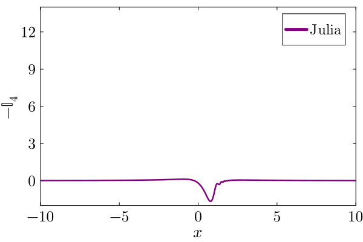
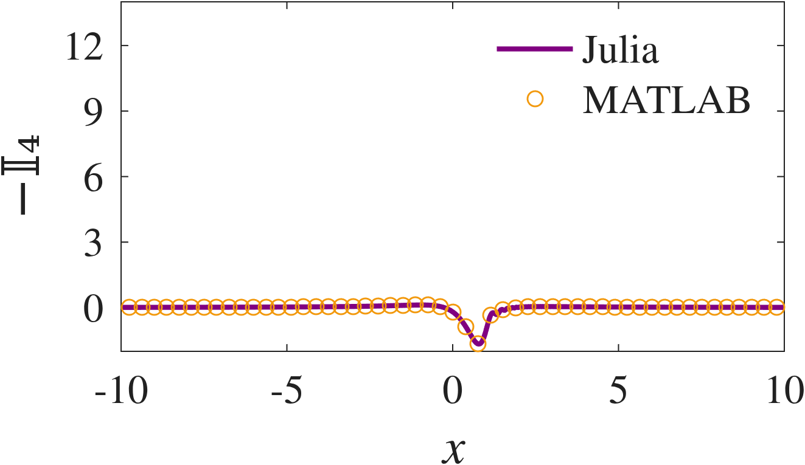
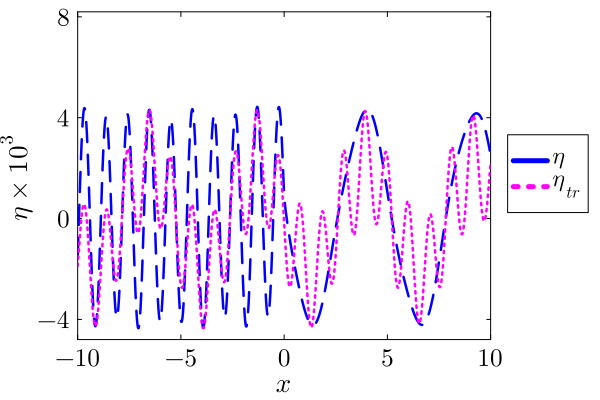
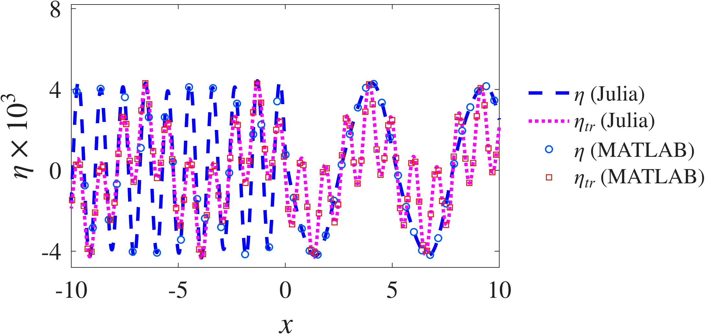
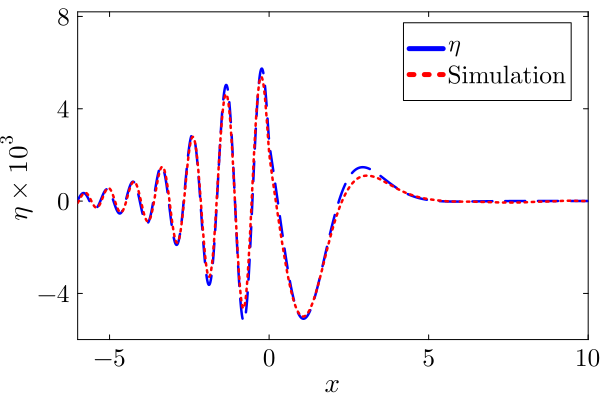
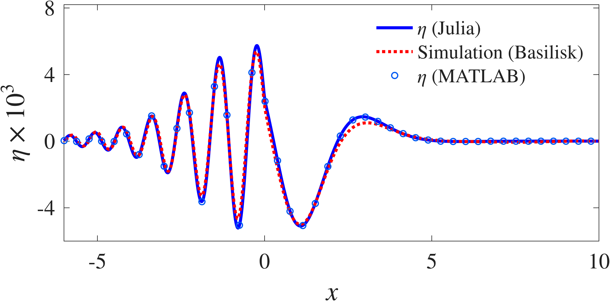

Capillary–Gravity (Manuscript §3.2)
With surface tension present ($\alpha > 0$), both gravity and capillary restoring forces act on the interface. The dispersion relation gains a cubic term, producing two distinct real poles $k_s$ (gravity root) and $k_l$ (capillary root). The key numerical technique is combining all integrand contributions so that the singularities cancel before quadrature.
Formulation
We now turn to the case of $\alpha>0$. As $\rho_r<1$, we have both capillary and gravitational forces. For this case, eqn. (2.8) of the manuscript can be rewritten as (Note that the integrals in eqn.(2.8) are folded onto the positive k-axis to get rid of the $|k|$ terms),
\[\eta(x,t) = \eta_s(x)+\eta_{\mathrm{tr}}(x,t), \tag{3.6a}\]
where,
\[\frac{\eta_s(x)}{F_0} \equiv -\frac{1}{\pi}\int_0^\infty dk\;\frac{\cos(kx)}{\alpha (k-k_l)(k-k_s)}, \tag{3.6b}\]
\[\frac{\eta_{\mathrm{tr}}(x,t)}{F_0} \equiv -\frac{1}{2\pi}\left[\mathbb{I}_3(x,t)+\mathbb{I}_4(x,t)\right], \tag{3.6c}\]
\[\mathbb{I}_{3,4}(x,t) \equiv -\frac{1+\rho_r}{\alpha}\int_0^\infty dk\,\frac{\left(k\pm\chi(k)\right)\cos\left[t\left(k\mp\chi(k)\right)-kx\right]}{\left(1+\alpha k^2-\rho_r\right)\left(k-k_l\right)\left(k-k_s\right)}, \tag{3.6d}\]
\[\chi(k) \equiv \sqrt{\beta k+\frac{\alpha}{1+\rho_r}k^3},\]
\[k_{l,s} = \frac{1+\rho_r}{2\alpha}\left[1\pm\sqrt{1-\frac{4\alpha\beta}{1+\rho_r}}\right].\]
Summing the nominal steady term (3.6b) and both transient terms (3.6d) into a single combined integrand before quadrature cancels the singularities, leaving a smooth function to integrate numerically. The combined integrand is then split into three pieces around the (now removable) singularities at $k_s$ and $k_l$ and integrated separately. The symmetric $\eta_s$ from (3.6b) is used as the steady part; the transient remainder is $\eta-\eta_s$.
The asymmetric classical radiation solution is a separate steady reference, representing the long-time limit of the full IVP solution after the transient contribution has decayed and supplied the asymmetric cancellation described below. It can be obtained either from the full time-dependent decomposition by tracking the asymmetric cancellation, or directly as the time-independent profile via the Rayleigh dissipation approach.
Similar to the previous section ($\alpha=0$ case), the interface shape due to the time-independent response $\eta_s(x)$, given by eqn. (3.6b), is also symmetric about $x=0$, (see the Steady-state proof). Note that eqn. (3.6b) is identical to eqn. (2.9) of the manuscript after excluding all terms arising from the Dirac delta function. This symmetric response is shown by the black solid curve in panel (a) of Figure 7 of the manuscript.
We now turn to a formal demonstration of the asymmetric cancellations about $x=0$ as $t\rightarrow\infty$. The expression for $\eta_s(x)$ in eqn. (3.6b), after application of principal-value techniques, may be written as (see the Steady-state proof):
\[\frac{\eta_s(x)}{F_0} = \frac{1}{\alpha(k_l-k_s)}\left[-\sin(k_s|x|)+\sin(k_l|x|)\right] + \frac{k_l+k_s}{\alpha\pi}\int_0^\infty dy\,\frac{y\exp\left(-|x|y\right)}{\left(y^2+k_l^2\right)\left(y^2+k_s^2\right)} \tag{3.7}\]
The second, integral term above is $G(x)$ (up to the prefactor); it is evaluated numerically in the code section below.
After lengthy calculations involving contour integration and stationary-phase approximation (see the Capillary-gravity asymmetric cancellation proof), we may show that
\[\frac{\eta_{\mathrm{tr}}(x,t\rightarrow\infty)}{F_0} = \frac{1}{\alpha(k_l-k_s)}\left[-\sin(k_sx)-\sin(k_lx)\right], \quad x\in(-\infty,\infty). \tag{3.8}\]
This contribution to the steady state essentially stems from the term $\mathbb{I}_3(x,t)$ in eqn. (3.6d), whereas the term $\mathbb{I}_4(x,t)$ in the same equation tends to zero as $t\rightarrow\infty$. Figure 6 of the manuscript confirms this decay for large time, $t\gg1$.
The sum of eqns. (3.7) and (3.8) yields the final form of the steady-state interface at all $x$. The asymmetric cancellation in $\eta(x,t\rightarrow\infty)=\eta_s(x)+\eta_{\mathrm{tr}}(x,t\rightarrow\infty)$, upstream ($x<0$) and downstream ($x>0$) of the forcing, may readily be observed by comparing these expressions. We reiterate that the short waves for $x<0$ and the long waves for $x>0$ seen at steady state result from this cancellation.
Unlike the $\alpha=0$ case, it was not possible to obtain closed-form expressions in terms of real integrals for the $\eta_{\mathrm{tr}}(x,t)$ terms in eqn. (3.6d). Hence, we have evaluated these integrals directly numerically in the principal-value sense around the pole(s).
Numerical evaluation
The integral expressions for $\eta(x,t)$ [eqn. (3.6a) of the manuscript], $\eta_s(x)$ [eqn. (3.6b)], and $\eta_{\mathrm{tr}}(x,t)$ [eqn. (3.6c)] are evaluated numerically using both Julia and MATLAB with the codes provided below, at $x=3$ and $t=110$. The integrals are computed using a numerical Cauchy principal value (CPV) procedure, in which a small neighborhood of width $\epsilon=10^{-6}$ around each pole, $k=k_s$ and $k=k_l$, is excluded from the numerical integration to avoid direct evaluation at the singularities.
using QuadGK
"""Typed nondimensional parameters for the two-fluid capillary–gravity IVP."""
struct CapillaryGravityParams
α::Float64; ρᵣ::Float64; β::Float64; γρ::Float64
kₗ::Float64; kₛ::Float64; F₀::Float64
εCPV::Float64; atol::Float64; rtol::Float64
end
function makeCGParams()
U, g, T = 26.7046, 981.0, 72.0
ρₗ, ρᵤ = 1.0, 0.001
ℓc = U^2 / g
α = T / (ρₗ * U^2 * ℓc)
ρᵣ = ρᵤ / ρₗ
β = (1.0 - ρᵣ) / (1.0 + ρᵣ)
Δ = (1.0 + ρᵣ)^2 - 4.0 * α * (1.0 - ρᵣ)
kₗ = ((1.0 + ρᵣ) + sqrt(Δ)) / (2.0 * α)
kₛ = ((1.0 + ρᵣ) - sqrt(Δ)) / (2.0 * α)
F₀ = 0.01 * T / (ρₗ * U^2 * ℓc)
return CapillaryGravityParams(α, ρᵣ, β, 1.0/(1.0 + ρᵣ),
kₗ, kₛ, F₀, 1e-6, 1e-10, 1e-8)
end
# Dispersion relation χ(k) = √(βk + γρ αk³).
@inline χ(k::Float64, p::CapillaryGravityParams) =
sqrt(p.β * k + p.γρ * p.α * k^3)
# Combined integrand in eqn. (3.6a); the kₛ and kₗ pole terms cancel in the sum.
function combinedIntegrand(k::Float64, x::Float64, t::Float64, p::CapillaryGravityParams)
χk = χ(k, p)
pole = 1.0 / (p.α * (k - p.kₗ) * (k - p.kₛ))
dispersion = (1.0 + p.ρᵣ) / (1.0 + p.α * k^2 - p.ρᵣ)
phase = k * (t - x)
return pole * (2.0 * cos(k * x) -
dispersion * (k + χk) * cos(phase - t * χk) -
dispersion * (k - χk) * cos(phase + t * χk))
end
# CPV quadrature split about kₛ and kₗ.
function cpvParts(x::Float64, t::Float64, p::CapillaryGravityParams)
f = k -> combinedIntegrand(k, x, t, p)
I₁, _ = quadgk(f, 0.0, p.kₛ - p.εCPV; atol=p.atol, rtol=p.rtol)
I₂, _ = quadgk(f, p.kₛ + p.εCPV, p.kₗ - p.εCPV; atol=p.atol, rtol=p.rtol)
I₃, _ = quadgk(f, p.kₗ + p.εCPV, Inf; atol=p.atol, rtol=p.rtol, order=15)
return I₁, I₂, I₃
end
# Eqn. (3.7): local steady integral G(x).
function Gₓ(x::Float64, p::CapillaryGravityParams)
f = k -> (cos(k*x)/(k + p.kₛ) - cos(k*x)/(k + p.kₗ)) / (p.kₗ - p.kₛ)
return first(quadgk(f, 0.0, Inf; atol=p.atol, rtol=p.rtol))
end
p = makeCGParams()
x, t = 3.0, 110.0
I₁, I₂, I₃ = cpvParts(x, t, p)
η = -p.F₀ * (I₁ + I₂ + I₃) / (2π)
G = Gₓ(x, p)
ηₛ = p.F₀/(p.α*(p.kₗ-p.kₛ)) * (-sin(p.kₛ*abs(x)) + sin(p.kₗ*abs(x))) + p.F₀*G/(π*p.α)
ηₜᵣ = η - ηₛ
ηclassical = p.F₀ * (-2sin(p.kₛ*x)/(p.α*(p.kₗ-p.kₛ)) + G/(π*p.α))
println("𝕀(k=2; x=3, t=110) = ", combinedIntegrand(2.0, x, t, p))
println("I₁ = ", I₁)
println("I₂ = ", I₂)
println("I₃ = ", I₃)
println("η = ", η)
println("ηₛ = ", ηₛ)
println("ηₜᵣ = ", ηₜᵣ)
println("ηclassical = ", ηclassical)
println("Gₓ = ", G)𝕀(k=2; x=3, t=110) = -2.4925901110201236
I₁ = -10.469830630677315
I₂ = -3.3709095739317627
I₃ = 5.152909149338945
η = 0.001920386718354745
ηₛ = -0.0005772670229863894
ηₜᵣ = 0.0024976537413411346
ηclassical = 0.001838802567706596
Gₓ = 0.011715104659267239%% Two-fluid capillary-gravity IVP via CPV integration
U = 26.7046; % Base flow speed [cm/s]
g = 981.0; % Gravitational acceleration [cm/s^2]
T = 72.0; % Surface tension [dyn/cm]
rho_l = 1.0; % Lower-fluid density [g/cm^3]
rho_u = 0.001; % Upper-fluid density [g/cm^3]
% Characteristic scales and nondimensional parameters
l_c = U^2 / g;
alpha = T / (rho_l * U^2 * l_c);
rho_r = rho_u / rho_l;
beta = (1.0 - rho_r) / (1.0 + rho_r);
gamma_rho = 1.0 / (1.0 + rho_r);
% Gravity and capillary wave roots
discriminant = (1.0 + rho_r)^2 - 4.0 * alpha * (1.0 - rho_r);
k_l = ((1.0 + rho_r) + sqrt(discriminant)) / (2.0 * alpha);
k_s = ((1.0 + rho_r) - sqrt(discriminant)) / (2.0 * alpha);
F0 = 0.01 * T / (rho_l * U^2 * l_c);
% Quadrature parameters
epsilon_pv = 1.0e-6;
AbsTol = 1.0e-10;
RelTol = 1.0e-8;
k_max = Inf;
% Evaluation point and time
x = 3.0;
t = 110.0;
% Two-fluid dispersion function
chi = @(k) sqrt(beta * k + gamma_rho * alpha * k.^3);
% Combined integrand: steady term + two transient terms.
% Summing before integration cancels the poles at k_s, k_l.
total_integrand = @(k) ...
2.0 * cos(k * x) ./ (alpha * (k - k_l) .* (k - k_s)) ...
- (1.0 + rho_r) * (k + chi(k)) ./ (1.0 - rho_r + alpha * k.^2) .* ...
cos(k * (t - x) - t * chi(k)) ./ (alpha * (k - k_l) .* (k - k_s)) ...
- (1.0 + rho_r) * (k - chi(k)) ./ (1.0 - rho_r + alpha * k.^2) .* ...
cos(k * (t - x) + t * chi(k)) ./ (alpha * (k - k_l) .* (k - k_s));
% Split the CPV integral around the two removable poles
I1 = integral(total_integrand, 0, k_s - epsilon_pv, ...
'AbsTol', AbsTol, 'RelTol', RelTol);
I2 = integral(total_integrand, k_s + epsilon_pv, k_l - epsilon_pv, ...
'AbsTol', AbsTol, 'RelTol', RelTol);
I3 = integral(total_integrand, k_l + epsilon_pv, k_max, ...
'AbsTol', AbsTol, 'RelTol', RelTol);
eta_ivp = -F0 / (2.0 * pi) * (I1 + I2 + I3);
% Steady solution via G(x)
G_integrand = @(k) cos(k * x) ./ (k + k_s) - cos(k * x) ./ (k + k_l);
G_x = integral(G_integrand, 0, Inf, 'AbsTol', AbsTol, 'RelTol', RelTol) / ...
(k_l - k_s);
eta_s = F0 / (alpha * (k_l - k_s)) * ...
(-sin(k_s * abs(x)) + sin(k_l * abs(x))) + ...
F0 * G_x / (pi * alpha);
eta_transient = eta_ivp - eta_s;
% Asymmetric classical radiation solution for long-time comparison
eta_classical = F0 * (-2.0 / (alpha * (k_l - k_s)) * sin(k_s * x) + ...
G_x / (pi * alpha));
fprintf('I(k=2; x=3, t=110) = %.16g\n', total_integrand(2));
fprintf('I1 = %.16g\n', I1);
fprintf('I2 = %.16g\n', I2);
fprintf('I3 = %.16g\n', I3);
fprintf('eta_ivp = %.16g\n', eta_ivp);
fprintf('eta_s (3.6b) = %.16g\n', eta_s);
fprintf('eta_transient = %.16g\n', eta_transient);
fprintf('eta_classical = %.16g\n', eta_classical);
fprintf('G(3) = %.16g\n', G_x);𝕀(k=2; x=3, t=110) = -2.492590111020124
I₁ = -10.46983063067731
I₂ = -3.370909573932243
I₃ = 5.152903874765406
η = 0.001920387884263914
ηₛ = -0.0005772670409069884
ηₜᵣ = 0.002497654925170902
ηclassical = 0.001838802549785997
Gₓ = 0.011715099029345The full spatial profile — IVP solution, its steady part, and the transient remainder — reproduces Figure 7 of the manuscript.
$\mathbb{I}_4$ transient (Fig. 6)
Figure 6 of the manuscript shows the transient component $-\mathbb{I}_4(x,t)$ at an early time $t = 0.37$, confirming the decay of $\mathbb{I}_4$ as $t\to\infty$.
The following Julia profile calculation reuses CapillaryGravityParams, makeCGParams, and χ from the preceding pointwise-validation block. When running this profile calculation independently, include that preceding Julia block first.
# Copy-pasting this code in Julia-REPL, reproduces panels of Fig 6 of the manuscript, depending on the value of non-dimensional time `t`
# (and having run the previous code-block)
using Plots, LaTeXStrings
function I₄Profile(xgrid::Vector{Float64}, t::Float64, p::CapillaryGravityParams)
I₄ = Vector{Float64}(undef, length(xgrid))
nchunks = min(Threads.nthreads(), length(xgrid))
chunkLength = cld(length(xgrid), nchunks)
Threads.@threads :static for chunk in 1:nchunks
first = (chunk - 1) * chunkLength + 1
last = min(chunk * chunkLength, length(xgrid))
first > last && continue
xchunk = @view xgrid[first:last]
values = zeros(Float64, length(xchunk))
integrand! = function (out, k)
k == 0.0 && (fill!(out, 0.0); return out)
χk = χ(k, p)
amplitude = k / ((k + χk) * (1.0 + p.α*k^2 - p.ρᵣ))
sinPhase, cosPhase = sincos(t * (k + χk))
@inbounds @simd for i in eachindex(xchunk, out)
sinKx, cosKx = sincos(k*xchunk[i])
out[i] = amplitude * (cosPhase*cosKx + sinPhase*sinKx)
end
out
end
quadgk!(integrand!, values, 0.0, Inf; atol=p.atol, rtol=p.rtol,
order=15, norm=values -> maximum(abs, values))
copyto!(@view(I₄[first:last]), values)
end
return I₄
end
p = makeCGParams()
t = 0.37
xgrid = collect(range(-15.0, 15.0; length=2001))
filter!(x -> abs(x) > 1e-12, xgrid)
I₄ = I₄Profile(xgrid, t, p)
default(fontfamily="Computer Modern", linewidth=2.5, framestyle=:box,
grid=false, guidefontsize=18, tickfontsize=16, legendfontsize=16)
plot(xgrid, -I₄; color="purple", label=L"\mathrm{Julia}",
xlabel=L"x", ylabel=L"-\mathbb{I}_{4}",
xlims=(-10,10), ylims=(-2,14), yticks=[0,3,6,9,12])%% Copy-pasting this code in MATLAB session, reproduces panels of Fig 6 of the manuscript, depending on the value of non-dimensional time `t`
%% Standalone regularized I4 profile at t = 0.37
U = 26.7046; g = 981.0; T = 72.0;
rho_l = 1.0; rho_u = 0.001;
l_c = U^2 / g;
alpha = T / (rho_l * U^2 * l_c);
rho_r = rho_u / rho_l;
beta = (1 - rho_r) / (1 + rho_r);
gamma_rho = 1 / (1 + rho_r);
AbsTol = 1e-10; RelTol = 1e-8;
chi = @(k) sqrt(beta*k + gamma_rho*alpha*k.^3);
t = 0.37;
x_grid = linspace(-15, 15, 2001);
x_grid(abs(x_grid) < 1e-12) = [];
% Regularized I4 integrand (pole cancelled): single integral over [0, Inf).
% 'ArrayValued' integrates the whole x_grid in one adaptive quadrature over k.
I4_integrand = @(k) (k == 0) * zeros(1, numel(x_grid)) + (k ~= 0) * ...
( k .* cos(t*(k + chi(k)) - k*x_grid) ./ ((k + chi(k)) * (1 + alpha*k^2 - rho_r)) );
I4 = integral(I4_integrand, 0, Inf, 'ArrayValued', true, ...
'AbsTol', AbsTol, 'RelTol', RelTol);
figure;
plot(x_grid, -I4, 'Color', [0.5 0 0.5], 'LineWidth', 3);
xlabel('x'); ylabel('-I_4');
xlim([-10 10]); ylim([-2 14]);

This is plotted ($t=0.37 $) profile as Fig 6 in the manuscript showing time evolution of $-I_4(x, t)$ from eqn. 3.6(d) for $\rho_r = 0.001$ and $\alpha = 0.1389$.
Full IVP profile (Fig. 7)
The capillary–gravity IVP has the transient contribution $\eta_{\mathrm{tr}}$. The follwoing code blocks in Julia/MATLAB reproduce the fig. 7 in the manuscript that plots $\eta$ and $\eta_{tr}$ at $t=367.35$
The following Julia profile calculation reuses CapillaryGravityParams, makeCGParams, and χ from the preceding pointwise-validation block. When running this profile calculation independently, include that preceding Julia block first.
# Copy-pasting this code in Julia-REPL, reproduces panels of Fig 7 of the manuscript, depending on the value of non-dimensional time `t`
# (and having run the previous code-block)
using QuadGK, Plots, LaTeXStrings
default(fontfamily="Computer Modern", linewidth=2.5, framestyle=:box,
grid=false, guidefontsize=18, tickfontsize=16, legendfontsize=16)
# Full CG IVP profile: combined CPV integrand (eqn 3.6a–d, 3 pole-split quadratures)
# and G(x) for η_s (eqn 3.6b) are computed per spatial chunk across threads.
function cgIVPProfile(xgrid::Vector{Float64}, t::Float64, p::CapillaryGravityParams)
α, ρᵣ, F₀ = p.α, p.ρᵣ, p.F₀
kₗ, kₛ, ε = p.kₗ, p.kₛ, p.εCPV
atol, rtol = p.atol, p.rtol
x_grid = xgrid
N = length(x_grid)
η = Vector{Float64}(undef, N)
G = Vector{Float64}(undef, N) # G(x) for η_s
nchunks = min(Threads.nthreads(), N); clen = cld(N, nchunks)
Threads.@threads :static for ci in 1:nchunks
lo = (ci-1)*clen + 1; hi = min(ci*clen, N); lo > hi && continue
xc = view(x_grid, lo:hi); M = length(xc)
# IVP η: combined integrand 𝕀(k;x,t), split at kₛ±ε and kₗ±ε
I1 = zeros(M); I2 = zeros(M); I3 = zeros(M)
function ivp!(vals, k)
c = χ(k, p); invp = 1/(α*(k-kₗ)*(k-kₛ)); invd = (1+ρᵣ)/(1+α*k^2-ρᵣ)
am = invd*(k+c); ap = invd*(k-c)
sm, cm = sincos(t*(k-c)); sp, cp = sincos(t*(k+c))
cc = 2*invp - (am*cm + ap*cp)*invp
sc = - (am*sm + ap*sp)*invp
@inbounds @simd for i in 1:M
s_kx, c_kx = sincos(k*xc[i]); vals[i] = cc*c_kx + sc*s_kx
end; vals
end
quadgk!(ivp!, I1, 0.0, kₛ-ε; atol=atol, rtol=rtol, norm=v->maximum(abs,v))
quadgk!(ivp!, I2, kₛ+ε, kₗ-ε; atol=atol, rtol=rtol, norm=v->maximum(abs,v))
quadgk!(ivp!, I3, kₗ+ε, Inf; atol=atol, rtol=rtol, order=15, norm=v->maximum(abs,v))
@inbounds @simd for i in 1:M; η[lo+i-1] = -F₀/(2π)*(I1[i]+I2[i]+I3[i]); end
# Steady G(x): Lamb integrand (kₗ−kₛ in denominator already cancelled)
Gc = zeros(M)
function gint!(vals, k)
coeff = (1/(k+kₛ) - 1/(k+kₗ)) / (kₗ - kₛ)
@inbounds @simd for i in 1:M; vals[i] = coeff*cos(k*xc[i]); end; vals
end
quadgk!(gint!, Gc, 0.0, Inf; atol=atol, rtol=rtol, norm=v->maximum(abs,v))
copyto!(view(G, lo:hi), Gc)
end
η_s = similar(η)
@inbounds @simd for i in 1:N
xv = x_grid[i]
η_s[i] = F₀/(α*(kₗ-kₛ)) * (-sin(kₛ*abs(xv)) + sin(kₗ*abs(xv))) + F₀*G[i]/(π*α)
end
return η, η_s, η .- η_s
end
x_grid = collect(range(-15.0, 15.0; length=2001))
filter!(x -> abs(x) > 1e-12, x_grid)
t = 367.35
p = makeCGParams()
η, η_s, η_tr = cgIVPProfile(x_grid, t, p)
plot(x_grid, η .* 1e3; label=L"\eta", color="blue", ls=:dash,
xlabel=L"x", ylabel=L"\eta \times 10^{3}",
xlims=(-10,10), ylims=(-4.8, 8.2), yticks=[-4, 0, 4, 8], legend=:outerright)
plot!(x_grid, η_tr .* 1e3; label=L"\eta_{tr}", color="magenta", ls=:dot)%% Copy-pasting this code in MATLAB session, reproduces panels of Fig 7 of the manuscript, depending on the value of non-dimensional time `t`
%% Full CG IVP profile at t = 367.35 (Fig 7)
U = 26.7046; g = 981.0; T = 72.0;
rho_l = 1.0; rho_u = 0.001;
l_c = U^2 / g;
alpha = T / (rho_l * U^2 * l_c);
rho_r = rho_u / rho_l;
gamma_rho = 1 / (1 + rho_r);
discriminant = (1 + rho_r)^2 - 4*alpha*(1 - rho_r);
k_l = ((1 + rho_r) + sqrt(discriminant)) / (2*alpha);
k_s = ((1 + rho_r) - sqrt(discriminant)) / (2*alpha);
F0 = 0.01 * T / (rho_l * U^2 * l_c);
epsilon_pv = 1e-6; AbsTol = 1e-10; RelTol = 1e-8;
chi = @(k) sqrt((1-rho_r)/(1+rho_r)*k + gamma_rho*alpha*k.^3);
x_grid = linspace(-15, 15, 2001); x_grid(abs(x_grid) < 1e-12) = [];
t = 367.35;
% Combined integrand 𝕀(k;x,t) — ArrayValued integrates the whole x_grid at once.
combined = @(k) ...
2*cos(k*x_grid) ./ (alpha*(k - k_l).*(k - k_s)) ...
- (1+rho_r)*(k + chi(k)).*cos(k*(t - x_grid) - t*chi(k)) ./ ...
((1 - rho_r + alpha*k^2)*alpha.*(k - k_l).*(k - k_s)) ...
- (1+rho_r)*(k - chi(k)).*cos(k*(t - x_grid) + t*chi(k)) ./ ...
((1 - rho_r + alpha*k^2)*alpha.*(k - k_l).*(k - k_s));
I_lo = integral(combined, 0, k_s - epsilon_pv, 'ArrayValued', true, 'AbsTol', AbsTol, 'RelTol', RelTol);
I_mi = integral(combined, k_s + epsilon_pv, k_l - epsilon_pv, 'ArrayValued', true, 'AbsTol', AbsTol, 'RelTol', RelTol);
I_hi = integral(combined, k_l + epsilon_pv, Inf, 'ArrayValued', true, 'AbsTol', AbsTol, 'RelTol', RelTol);
eta_8 = -F0/(2*pi) * (I_lo + I_mi + I_hi);
% Steady η_s (eqn 3.6b) via Lamb G(x) — ArrayValued
G_int = @(k) (cos(k*x_grid)./(k + k_s) - cos(k*x_grid)./(k + k_l)) / (k_l - k_s);
G_x = integral(G_int, 0, Inf, 'ArrayValued', true, 'AbsTol', AbsTol, 'RelTol', RelTol);
eta_s_8 = F0/(alpha*(k_l - k_s)) .* (-sin(k_s*abs(x_grid)) + sin(k_l*abs(x_grid))) + F0*G_x/(pi*alpha);
eta_tr_8 = eta_8 - eta_s_8;
figure; hold on;
plot(x_grid, eta_8*1e3, 'b--', 'LineWidth', 3);
plot(x_grid, eta_tr_8*1e3, 'm:', 'LineWidth', 3);
xlabel('x'); ylabel('\eta \times 10^3');
legend('\eta', '\eta_{tr}'); xlim([-10 10]);

Comparison with nonlinear simulations (Fig. 9)
The IVP solution is compared against a nonlinear simulation using Basilisk[1] (Navier–Stokes/VOF) at different time-instances. Details of the CFD setup — domain, pressure forcing, boundary conditions, and mesh refinement — are described in the Basilisk CFD Setup page.
The interface profiles are stored as CSV files in the folder notebooks at dimensional time ($0.01, 0.03, 0.07, 0.15, 0.25, 0.60, 1.45, 3.0$) in seconds and are extracted from the Basilisk dump files. They are saved as if_1.csv, if_3.csv, if_7.csv, if_15.csv, if_25.csv, if_60.csv, if_145.csv, and if_300.csv respectively, to compare with IVP theory.
The following Julia comparison calculation reuses CapillaryGravityParams, makeCGParams, χ, and cgIVPProfile from the preceding pointwise and Fig. 7 profile code-blocks. When running it independently, include those preceding Julia blocks first.
## Simulation(Basilisk) data is in folder `notebooks` of the github repo. Kindly adjust the path in `joinpath("notebooks", "if_$num.csv")` accordingly
## Copy-pasting this code in Julia-REPL, reproduces panels of Fig 9 of the manuscript, depending on the value of dimensional time `t_dim`
# (and having run the previous code-blocks)
using DelimitedFiles, Plots, LaTeXStrings
# Nondimensional time and length scales (no API)
U, g = 26.7046, 981.0
t_c = U / g # characteristic time [s]
l_c = U^2 / g # characteristic length [cm]
t_dim = 0.25
t_sim = t_dim / (t_c) # nondimensional (data in CGS: 1 cm = l_c)
# IVP η using the shared cgIVPProfile driver from Fig. 7.
x_grid = collect(range(-15.0, 15.0; length=2001)); filter!(x -> abs(x) > 1e-12, x_grid)
p = makeCGParams()
η_sim, _, _ = cgIVPProfile(x_grid, t_sim, p)
# Basilisk simulation data: column 6 = x [cm], column 7 = y [cm]
data = sortslices(readdlm(joinpath("notebooks", "if_25.csv"), ',', Float64; skipstart=1),
dims=1, by=r -> r[6])
x_bsk = data[:, 6] ./ l_c
y_bsk = data[:, 7] ./ l_c
plot(x_grid, η_sim .* 1e3; label=L"\eta", color="blue", ls=:dash,
xlabel=L"x", ylabel=L"\eta \times 10^{3}",
xlims=(-6,10), ylims=(-6, 8.2), yticks=[-4, 0, 4, 8],
legend=:topright)
plot!(x_bsk, y_bsk .* 1e3; label="Simulation", color="red", ls=:dot)%% Simulation(Basilisk) data is in folder `notebooks` of the github repo. Kindly adjust the path in `readmatrix('notebooks/if_$num.csv');` accordingly.
%% Copy-pasting this code in MATLAB session, reproduces panels of Fig 9 of the manuscript, depending on the value of dimensional time `t_dim`
%% IVP vs nonlinear simulation at t_dim = 0.25 s (Fig 9)
U = 26.7046; g = 981.0; T = 72.0;
rho_l = 1.0; rho_u = 0.001;
l_c = U^2 / g;
t_c = U / g;
alpha = T / (rho_l * U^2 * l_c);
rho_r = rho_u / rho_l;
gamma_rho = 1 / (1 + rho_r);
discriminant = (1 + rho_r)^2 - 4*alpha*(1 - rho_r);
k_l = ((1 + rho_r) + sqrt(discriminant)) / (2*alpha);
k_s = ((1 + rho_r) - sqrt(discriminant)) / (2*alpha);
F0 = 0.01 * T / (rho_l * U^2 * l_c);
epsilon_pv = 1e-6; AbsTol = 1e-10; RelTol = 1e-8;
chi = @(k) sqrt((1-rho_r)/(1+rho_r)*k + gamma_rho*alpha*k.^3);
x_grid = linspace(-15, 15, 2001); x_grid(abs(x_grid) < 1e-12) = [];
t_dim = 0.25;
t = t_dim / ( t_c);
% IVP η — ArrayValued combined-integrand inversion (same as Fig 7)
combined = @(k) ...
2*cos(k*x_grid) ./ (alpha*(k - k_l).*(k - k_s)) ...
- (1+rho_r)*(k + chi(k)).*cos(k*(t - x_grid) - t*chi(k)) ./ ...
((1 - rho_r + alpha*k^2)*alpha.*(k - k_l).*(k - k_s)) ...
- (1+rho_r)*(k - chi(k)).*cos(k*(t - x_grid) + t*chi(k)) ./ ...
((1 - rho_r + alpha*k^2)*alpha.*(k - k_l).*(k - k_s));
I_lo = integral(combined, 0, k_s - epsilon_pv, 'ArrayValued', true, 'AbsTol', AbsTol, 'RelTol', RelTol);
I_mi = integral(combined, k_s + epsilon_pv, k_l - epsilon_pv, 'ArrayValued', true, 'AbsTol', AbsTol, 'RelTol', RelTol);
I_hi = integral(combined, k_l + epsilon_pv, Inf, 'ArrayValued', true, 'AbsTol', AbsTol, 'RelTol', RelTol);
eta_sim = -F0/(2*pi) * (I_lo + I_mi + I_hi);
% Basilisk simulation data
data = readmatrix('notebooks/if_25.csv'); % adjust file and folder paths as per user.. this is for t=0.25 sec
data = sortrows(data, 6);
x_bsk = data(:,6) / l_c;
y_bsk = data(:,7) / l_c;
figure; hold on;
plot(x_grid, eta_sim*1e3, 'b--', 'LineWidth', 3);
plot(x_bsk, y_bsk*1e3, 'r:', 'LineWidth', 3);
xlabel('x'); ylabel('\eta \times 10^3');
legend('\eta (IVP)', 'Simulation'); xlim([-6 10]);

References
- 1Popinet, S., & collaborators. (2013–2026). Basilisk: Free software for solving partial differential equations on adaptive Cartesian meshes. http://basilisk.fr